# General Packages
library(tidyr) # data wrangling
library(dplyr) # data wrangling
library(readr) # read in files
library(ggplot2) # plotting and mapping
library(patchwork) # combining maps/plots
library(cowplot) # combining plots to make an inset map
# Spatial Packages
library(sf) # manipulating spatial data
library(ggspatial) # retrieving basemap, adding scale and arrowbar
library(maptiles) # retrieving basemap
library(terra) # working with raster data
library(tidyterra) # functions for working with raster
# Data
library(tigris) # shapefiles with various administrative boundaries and roadsLearning Objectives
Use
sfto read in and map simple spatial dataUse
ggspatialormaptilesto add a basemap, scalebar and north arrow to your mapsUnderstand how you can use R to streamline the map-making process (using themes and functions)
5.1 Overview
sf, or “Simple Features”, is a package for working with spatial vector data (e.g. points, lines, polygons) in R. Simple features is a standard for storing and accessing the spatial data that represents “features” in the real world on computers. The sf package provides a set of tools for retrieving spatial data in R, performing basic geometry operations, and visualizing that spatial data.
Most functions in sf start with st_[function_name], which stands for spatial type. These functions perform various spatial data operations so we can manipulate our data for better visualizations. In this lesson we will review the basic functions for working with spatial data from this package, and how to visualize that data along with additional packages ggspatial, maptiles, and ggplot2 to make maps you could use in publications or reports.
Set-up
Make sure you’re in the right project (training_{USERNAME}) and use the Git workflow by Pulling to check for any changes. Then, create a new Quarto document, delete the default text, and save this document.
Load packages
- Learn about the data
The data used here are open source data available either on the KNB data repository or from the US Government. The specific data sources and citations are listed below:
| Data | Original Dataset |
|---|---|
| Study Sites | cj lortie, M Zuliani, Nargol Ghazian, Jenna Braun, S Haas, & Rachel King. 2022. A list of ecological study sites within Central California Drylands. Knowledge Network for Biocomplexity. doi:10.5063/F1X34VXT. |
| California Ecoregions | U.S. Environmental Protection Agency. 2012. Level IV Ecoregions of California. U.S. EPA Office of Research and Development (ORD) - National Health and Environmental Effects Research Laboratory (NHEERL), Corvallis, OR. California Level IV Ecoregions |
| California State Boundary | U.S. Census Bureau TIGER/Line Shapefiles. (2023). |
We’ll read in the data together as part of the lesson.
Note
Another good option for plotting spatial data in R is the tmap package with companion package tmaptools. However, the syntax is slightly different so I won’t cover that today. It does allow an interactive view feature via Leaflet which is nice, and maybe the subject for a future EcoDataScience workshop.
5.2 Part I: Intro to working with spatial data with the sf package
First let’s review the key functions we’ll be working with from the sf package. There are more but the ones listed below are the primary ones we are using today:
Access data:
st_readandread_sf: functions to read in data stored in a format primarily used for spatial data (e.g. shapefile, geopackage)st_as_sf: convert an object into ansfobject (requires coordinates and CRS information)
Access spatial properties:
st_crs: retrieve the coordinate reference system for the objectst_bbox: retrieve the bounding box (min and max x and y coordinates) for the object
Spatial Data Operations:
st_join: perform a spatial joinst_transform: convert the coordinates of your object to a different CRS
This sf cheatsheet is a great reference guide for most of the sf functions you many want to use.
5.2.1 Loading Spatial Data
Spatial data can be found from multiple sources online (or you may have your own) and may be stored in a variety of formats. Here we’ll show three common ways to load spatial data in R.
5.2.1.1 Method 1: From a .csv file
Data from an online database like KNB with information on study site locations is frequently found in a text file, like a .csv. To work with this data, you read in the file as normal but then you will have to convert it to an sf object to use the sf package functions for easier plotting.
This is the case for the site data we’re using. To load the California Dryland Sites data, head to the site linked above, hover over the “Download” button for the tidy_regional_2024.csv file, right click and select “Copy Link Address”. Then read in using the read_csv function from the readr package.
# read in data from .csv file
site_df <- read_csv("https://knb.ecoinformatics.org/knb/d1/mn/v2/object/urn%3Auuid%3A7161c08c-79b7-4970-94b4-7d6e4fcfcc03")Rows: 51 Columns: 39
── Column specification ────────────────────────────────────────────────────────
Delimiter: ","
chr (11): state, desert, region, experiment, site_acronym, site_code, founda...
dbl (28): elevation, area_m2, area_block_m2, MAT, MAP, long, lat, aridity, n...
ℹ Use `spec()` to retrieve the full column specification for this data.
ℹ Specify the column types or set `show_col_types = FALSE` to quiet this message.# alternatively download into your working directory and run
# site_df <- read_csv("tidy_regional_2023.csv")There are a lot of columns we don’t need for this, so we’re going to select a few to work with:
site_df <- site_df %>%
select(state, desert, site_code, long, lat, ndvi_2023, MAT, MAP) 5.2.1.2 Method 2: From a shapefile
The second data layer we will read in is a shapefile with ecoregions for California that is provided by the US EPA: California Level IV Ecoregions
To access this shapefile, we need to manually download it from the link above and unzip the files into your working directory.
Important
When you download a shapefile you are actually downloading multiple files required for properly accessing the data. When reading in a shapefile, you use the filename with the .shp extension, but the associated files from the zipped folder are required for the data to read in properly. So, if you unzip the folder and then only copy the .shp file into your working directory or data folder for a project you will get an error message.
We will use the read_sf function from the sf package, which loads the shapefile as a tidyverse tibble. You can also use st_read to load shapefiles, but it contains more messages and loads the data as a base R data.frame instead of a tibble.
# read in data from shapefile
ecoreg_sf <- sf::read_sf("data/ca_ecoregion_shape/ca_eco_l4.shp")here() starts at /home/runner/work/repro-research-course/repro-research-course/nceas-training/materials5.2.1.3 Method 3: From a package
The tigris package allows you to easily download TIGER/Line shapefiles from the US Census Bureau for things like state boundaries, roads, county lines, etc. We’ll use it to download some boundaries for the state of California.
# read in data using package
states_sf <- tigris::states(progress_bar = FALSE)
CA_counties_sf <- tigris::counties(state = "CA", progress_bar = FALSE)5.2.2 Working with sf data
Now we’ll see some useful features of the sf package and how to access and set important spatial information from your data.
5.2.2.1 Identify and set the CRS
The Coordinate Reference System (CRS) is an important piece of information that contains the instructions for how to display the spatial data. It tells R where the points are located and how to project the points from a spherical (or ellipsoidal) 3D object to a 2D surface. See this data carpentry lesson, Section 2.4 in Geocomputation in R, or this post from ESRI for more information on CRS’s.
When you read in data from a shapefile or a package the data should already have the CRS information associated with the data. If it is an unusual CRS you should check the metadata for additional details about the CRS.
When you are reading in data from a .csv file, you need to set the CRS yourself when you convert your data.frame into an sf object. Thus, you’ll need to check the metadata to find the appropriate CRS.
You’ll often see lat/long data use the WGS84 CRS, which is a geographic (unprojected) coordinate reference system. This is the CRS used by the site_df.
An easy way to specify this is to use the EPSG code (European Petroleum Survey Group), which references a database of the associated geodetic parameters for common CRS. The code for the WGS84 is EPSG:4326.
colnames(site_df) # check column names[1] "state" "desert" "site_code" "long" "lat" "ndvi_2023"
[7] "MAT" "MAP" # The coordinate information is in the "long" and "lat column
site_sf <- site_df %>%
st_as_sf(
coords = c("long", "lat"), # specify where spatial data is; "longitude" is first
crs = "EPSG:4326" # need to tell it what the CRS is
)Now you’ll see that our site data not just a data frame but is also now an sf object, which allows us to use all of the sf functions with this data now.
class(site_sf)[1] "sf" "tbl_df" "tbl" "data.frame"head(site_sf)Simple feature collection with 6 features and 6 fields
Geometry type: POINT
Dimension: XY
Bounding box: xmin: -120.1018 ymin: 34.87623 xmax: -114.9 ymax: 36.06219
Geodetic CRS: WGS 84
# A tibble: 6 × 7
state desert site_code ndvi_2023 MAT MAP geometry
<chr> <chr> <chr> <dbl> <dbl> <dbl> <POINT [°]>
1 California Mojave Antelope… 0.275 13.7 125 (-118.602 34.87623)
2 California San Joaq… Avenal 0.632 17.3 169 (-120.1018 36.06219)
3 California Mojave Barstow_1 0.109 19.3 160 (-116.8349 35.09405)
4 California Mojave Barstow_2 0.238 16.6 160 (-117.98 35.02)
5 Nevada Mojave Cal_nev_… 0.153 18 129 (-114.9 35.4)
6 California San Joaq… Carrizo_1 0.574 14.3 150 (-119.725 35.20177)You’ll also see that we have some new attribute information associated with this object:
Geometry Type: Point
Dimension
Bounding Box
CRS
We can also access this info with some common sf functions:
st_crsto check the CRS of the objectst_bboxretrieves the bounding box around the entire objectst_geometry_typeidentifies the geometry of each observation/row in the dataset
# get the crs
st_crs(site_sf)Coordinate Reference System:
User input: EPSG:4326
wkt:
GEOGCRS["WGS 84",
ENSEMBLE["World Geodetic System 1984 ensemble",
MEMBER["World Geodetic System 1984 (Transit)"],
MEMBER["World Geodetic System 1984 (G730)"],
MEMBER["World Geodetic System 1984 (G873)"],
MEMBER["World Geodetic System 1984 (G1150)"],
MEMBER["World Geodetic System 1984 (G1674)"],
MEMBER["World Geodetic System 1984 (G1762)"],
MEMBER["World Geodetic System 1984 (G2139)"],
ELLIPSOID["WGS 84",6378137,298.257223563,
LENGTHUNIT["metre",1]],
ENSEMBLEACCURACY[2.0]],
PRIMEM["Greenwich",0,
ANGLEUNIT["degree",0.0174532925199433]],
CS[ellipsoidal,2],
AXIS["geodetic latitude (Lat)",north,
ORDER[1],
ANGLEUNIT["degree",0.0174532925199433]],
AXIS["geodetic longitude (Lon)",east,
ORDER[2],
ANGLEUNIT["degree",0.0174532925199433]],
USAGE[
SCOPE["Horizontal component of 3D system."],
AREA["World."],
BBOX[-90,-180,90,180]],
ID["EPSG",4326]]# retrieve the bounding box around all points in the object
st_bbox(site_sf) xmin ymin xmax ymax
-120.81229 34.20568 -114.07000 36.76000 st_geometry_type(site_sf) [1] POINT POINT POINT POINT POINT POINT POINT POINT POINT POINT POINT POINT
[13] POINT POINT POINT POINT POINT POINT POINT POINT POINT POINT POINT POINT
[25] POINT POINT POINT POINT POINT POINT POINT POINT POINT POINT POINT POINT
[37] POINT POINT POINT POINT POINT POINT POINT POINT POINT POINT POINT POINT
[49] POINT POINT POINT
18 Levels: GEOMETRY POINT LINESTRING POLYGON MULTIPOINT ... TRIANGLEIn addition to the sf operations, objects of class sf usually function very similarly to other tibbles or data.frames and you can pretty much perform operations on these objects as usual. However, the geometry column can complicate some things, and if you want to remove it you need to call st_drop_geometry.
When working with multiple data sources, it is important to have them in the same CRS for visualizing or they won’t map properly. So, we need to check the CRS for the other datasets to see if they match:
# crs for ecoregions
st_crs(ecoreg_sf)Coordinate Reference System:
User input: USA_Contiguous_Albers_Equal_Area_Conic_USGS_version
wkt:
PROJCRS["USA_Contiguous_Albers_Equal_Area_Conic_USGS_version",
BASEGEOGCRS["NAD83",
DATUM["North American Datum 1983",
ELLIPSOID["GRS 1980",6378137,298.257222101,
LENGTHUNIT["metre",1]]],
PRIMEM["Greenwich",0,
ANGLEUNIT["Degree",0.0174532925199433]]],
CONVERSION["USA_Contiguous_Albers_Equal_Area_Conic_USGS_version",
METHOD["Albers Equal Area",
ID["EPSG",9822]],
PARAMETER["Latitude of false origin",23,
ANGLEUNIT["Degree",0.0174532925199433],
ID["EPSG",8821]],
PARAMETER["Longitude of false origin",-96,
ANGLEUNIT["Degree",0.0174532925199433],
ID["EPSG",8822]],
PARAMETER["Latitude of 1st standard parallel",29.5,
ANGLEUNIT["Degree",0.0174532925199433],
ID["EPSG",8823]],
PARAMETER["Latitude of 2nd standard parallel",45.5,
ANGLEUNIT["Degree",0.0174532925199433],
ID["EPSG",8824]],
PARAMETER["Easting at false origin",0,
LENGTHUNIT["metre",1],
ID["EPSG",8826]],
PARAMETER["Northing at false origin",0,
LENGTHUNIT["metre",1],
ID["EPSG",8827]]],
CS[Cartesian,2],
AXIS["(E)",east,
ORDER[1],
LENGTHUNIT["metre",1]],
AXIS["(N)",north,
ORDER[2],
LENGTHUNIT["metre",1]],
USAGE[
SCOPE["Not known."],
AREA["United States (USA) - CONUS onshore - Alabama; Arizona; Arkansas; California; Colorado; Connecticut; Delaware; Florida; Georgia; Idaho; Illinois; Indiana; Iowa; Kansas; Kentucky; Louisiana; Maine; Maryland; Massachusetts; Michigan; Minnesota; Mississippi; Missouri; Montana; Nebraska; Nevada; New Hampshire; New Jersey; New Mexico; New York; North Carolina; North Dakota; Ohio; Oklahoma; Oregon; Pennsylvania; Rhode Island; South Carolina; South Dakota; Tennessee; Texas; Utah; Vermont; Virginia; Washington; West Virginia; Wisconsin; Wyoming."],
BBOX[24.41,-124.79,49.38,-66.91]],
ID["ESRI",102039]]st_crs(states_sf)Coordinate Reference System:
User input: NAD83
wkt:
GEOGCRS["NAD83",
DATUM["North American Datum 1983",
ELLIPSOID["GRS 1980",6378137,298.257222101,
LENGTHUNIT["metre",1]]],
PRIMEM["Greenwich",0,
ANGLEUNIT["degree",0.0174532925199433]],
CS[ellipsoidal,2],
AXIS["latitude",north,
ORDER[1],
ANGLEUNIT["degree",0.0174532925199433]],
AXIS["longitude",east,
ORDER[2],
ANGLEUNIT["degree",0.0174532925199433]],
ID["EPSG",4269]]So, all of our spatial data sets currently have different CRS. We will need to reproject the data from two of the three so that we will be able to map all our data at the same time.
5.2.2.2 Basic Spatial Data Operations
We can use the st_transform function to project our data into the same CRS.
But which CRS should we choose for our map making? It depends on what you are doing… there are projections that preserve area, distance, angles, so you will need to decide based on what is important in your situation. For a static map it may make sense to use a projection more specific to your area or goal (e.g. equal area). For simplicity, today I’ll transform the state and site data to the CRS of the ecoregion data.
# project site and state lines to ecoreg CRS
states_proj_sf <- st_transform(states_sf, st_crs(ecoreg_sf))
site_proj_sf <- st_transform(site_sf, st_crs(ecoreg_sf))The states dataset also contains data for ALL US states. We can filter this data just like any other dataset so we just have the outline for California:
ca_proj_sf <- states_proj_sf %>%
filter(NAME == "California")There are some sites that are outside the state of California, and I only want to map the California locations. While we could filter based on the state column in the dataset, sometimes you won’t have that. Another way to filter is to use the state outline to filter our site data to just include the sites within our area of interest:
unique(site_proj_sf$state) [1] "California" "Nevada" site_ca_proj_sf <- site_proj_sf %>%
st_filter(ca_proj_sf, .predicate = st_covered_by)
unique(site_ca_proj_sf$state)[1] "California"Here we used the st_filter function which can take a user-specified predicate function to “keep the geometries in x where .predicate(x,y) returns any match in y for x”. So, st_covered_by will return all values in x (site_proj_sf) that are covered by y (ca_proj_sf).
Now, if I wanted to know the ecoregion of each of my sites I could also find that out using a spatial join. Using st_join we will add in the attributes of the ecoreg_sf object at any location that intersects the coordinates from the site_ca_proj_sf object.
site_ecoreg_sf <- st_join(site_ca_proj_sf, ecoreg_sf, join = st_intersects)
# st_intersects is the default
colnames(site_ecoreg_sf) [1] "state" "desert" "site_code" "ndvi_2023" "MAT"
[6] "MAP" "geometry" "OBJECTID" "US_L4CODE" "US_L4NAME"
[11] "US_L3CODE" "US_L3NAME" "NA_L3CODE" "NA_L3NAME" "NA_L2CODE"
[16] "NA_L2NAME" "NA_L1CODE" "NA_L1NAME" "STATE_NAME" "EPA_REGION"
[21] "L4_KEY" "L3_KEY" "L2_KEY" "L1_KEY" "Shape_Leng"
[26] "Shape_Area"There are many other spatial operations you can perform with the sf package. For additional details you can see Section 4.2 of Geocomputation in R. Geometry operations are covered in Ch. 5.
5.2.3 Making the map
Finally it’s time to make our map! One of the simplest ways to do this is to use ggplot2 which works well with sf objects. To plot sf objects, we use the geom_sf instead of geom_point or geom_line that you might use with graphs or figures in ggplot2.
ggplot(data = ca_proj_sf) +
geom_sf() 
When adding multiple layers, I usually specify the data in the geom_sf call so it is a bit more clear what each call is plotting. However, this means you must add data = before the data type or it will throw an error.
ggplot() + # don't specify data here since we have multiple data sets to plot
geom_sf(data = ca_proj_sf) + # must specify "data = " or it will throw an error
geom_sf(data = ecoreg_sf) +
geom_sf(data = site_ca_proj_sf)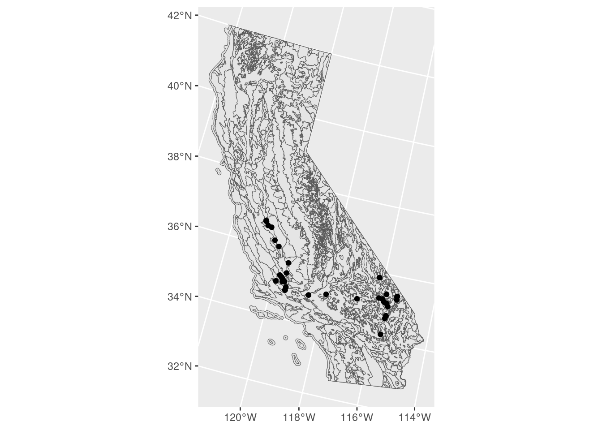
One of the things I like about mapping with ggplot is that if you are familiar with it already, modifying the plot appearance is very similar so you don’t have to learn many new things to visualize your data. For example, you can set fill and color in the same way via the aesthetics or in the main call to geom_sf.
ggplot() + # don't specify data here since we have multiple data sets to plot
geom_sf(data = ca_proj_sf, fill = NA) + # specify no fill
geom_sf(data = ecoreg_sf, aes(fill = US_L3NAME), color = "white") + # like other data you can set fill
geom_sf(data = site_ca_proj_sf) +
scale_fill_discrete(name = "Ecoregion") +
theme_bw() 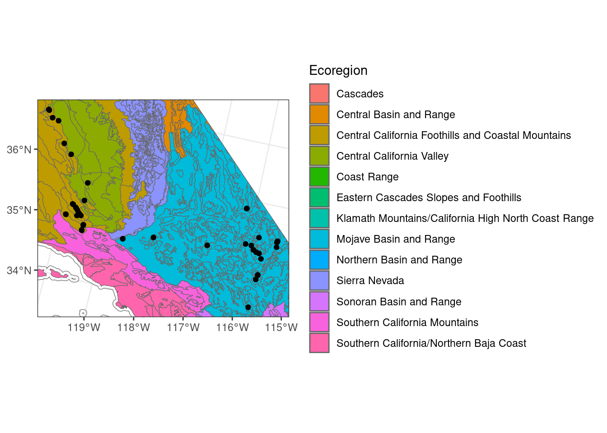
When visualizing the data, you can see that it will scale to automatically include all of the data plotted. However, here we may want to focus in on the sites since there are no sites in norther California. Normally to modify the extent of the plot with ggplot you can use coord_cartesian, but with geom_sf you have to use coord_sf. You can also use scale_x_continuous or scale_y_continuous to set limits for each axis as well.
# find extent of sites to get x and y limits
st_bbox(site_ca_proj_sf) xmin ymin xmax ymax
-2171214 1424401 -1733924 1802929 # with coord_sf
ggplot() + # don't specify data here since we have multiple data sets to plot
geom_sf(data = ca_proj_sf, fill = NA) + # specify no fill
geom_sf(data = ecoreg_sf, aes(fill = US_L3NAME), color = "grey40") + # like other data you can set fill
geom_sf(data = site_ca_proj_sf) +
scale_fill_discrete(name = "Ecoregion") +
theme_bw() +
coord_sf(xlim = c(-2171214, -1733924), ylim = c(1424401, 1802929))
# with scale_*_continuous
ggplot() + # don't specify data here since we have multiple data sets to plot
geom_sf(data = ca_proj_sf, fill = NA) + # specify no fill
geom_sf(data = ecoreg_sf, aes(fill = US_L3NAME), color = "grey40") + # like other data you can set fill
geom_sf(data = site_ca_proj_sf) +
scale_fill_discrete(name = "Ecoregion") +
theme_bw() +
scale_x_continuous(limits = c(-2171214, -1733924)) +
scale_y_continuous(limits = c(1424401, 1802929))
Zooming in is nice, but it does mean you lose some geographic context for the broader region. In Part III I will show you how to create an inset map so you can zoom in on a focal region as well as include a larger region for context.
You can also use facet_wrap() to split your map into smaller maps with any of your variables.
ggplot() + # don't specify data here since we have multiple data sets to plot
geom_sf(data = ca_proj_sf, fill = NA) + # must specify "data = " or it will throw an error
geom_sf(data = ecoreg_sf, aes(fill = US_L3NAME)) + # like other data you can set fill
geom_sf(data = site_ca_proj_sf) +
scale_fill_discrete(name = "Ecoregion") +
theme_bw() +
facet_wrap(~desert) +
coord_sf(xlim = c(-2171214, -1733924), ylim = c(1424401, 1802929))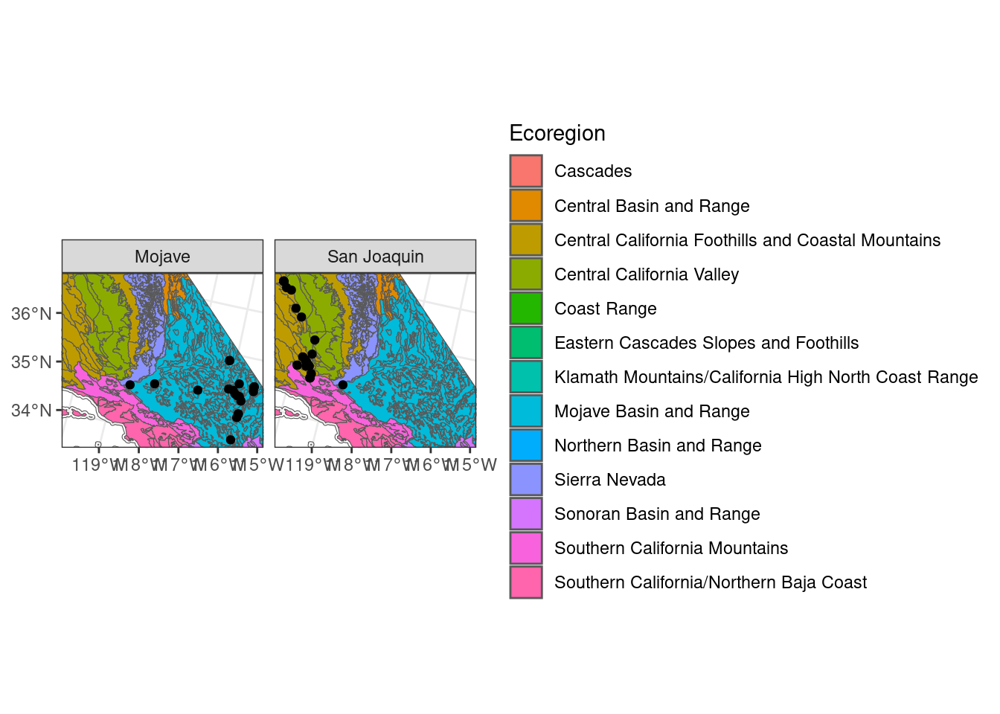
Unfortunately, when using geom_sf the scales = "free" option doesn’t work with faceting, so if you want to create a map with something that looks like facets it is probably easier to create two separate maps and combine them using either the patchwork or cowplot package.
Exercises
Modify the code from one of the maps above and explore how to alter the appearance by changing the aesthetics of one or more of the layers. Remember, you can specify these either within the call to
aes()ingeom_sfto have the aesthetics vary by one of the attributes you specify, or outsideaes()but withingeom_sf()to set them for the entire layer. Some potential options:size: alter the size of the points;aes(size = MAT)or (geom_sf(size = 3))linewidth: specifies the width of lines for a featurecolor: changes the line or point colorshape: specify the shape for pointslinetype: change the line style (solid, dashed, etc.)
5.3 Part II: Add a Basemap
Basemaps provide important geographical context for your data and can serve as an important visual references for your maps. In GIS programs it is often pretty easy to add a basemap layer, but in R there are a few additional steps and different packages needed.
5.3.1 My Favorite Basemap Providers, Packages and Functions
There are many options for basemaps for your mapping projects in R, as well as several different packages for working with those map layers. Basemaps are provided as a series of tiles from various basemap providers, some are freely available and others require registration and/or a subscription to access them via an API key. Below I list the providers of various basemaps
Basemap Data Providers:
*: requires registration but has a free tier
**: paid service
OpenStreetMap
Stamen via Stadia*
Thunderforest*
Carto**
Google
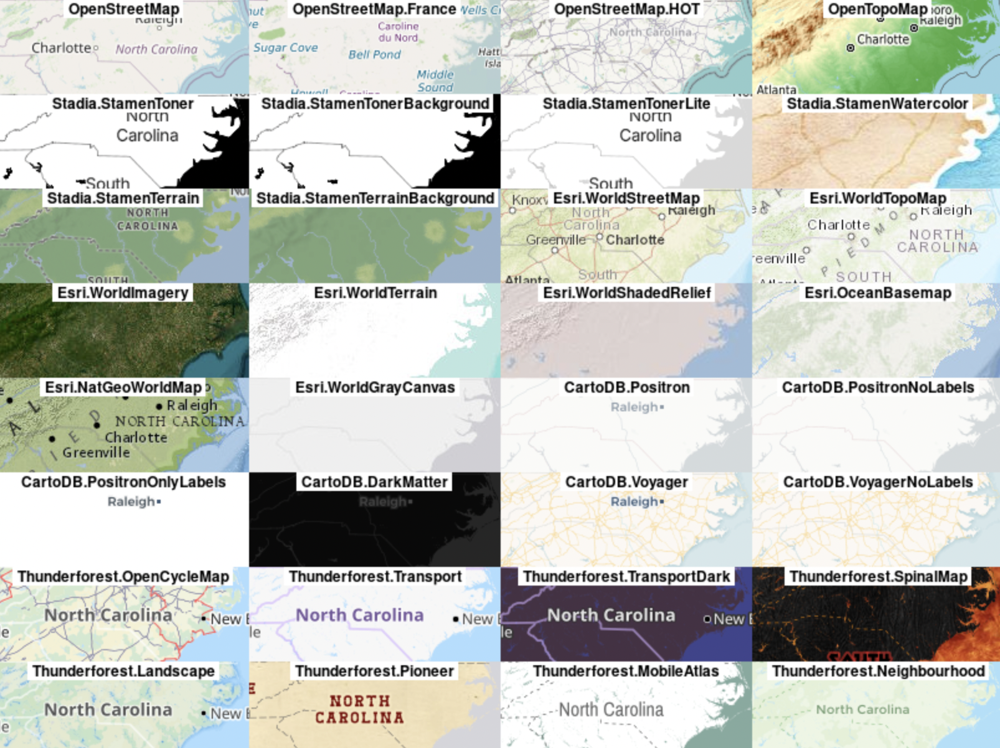
Basemap R Packages
Make it “easy” to download and bring in the basemap tiles to R. In reality, I have found that some packages are much easier than others to work with.
My favorites:
-
uses
rosm::osm.image()to display/fetch map tileseasy integration with ggplot (returns a ggplot layer)
can’t directly specify spatial extent, uses your data
-
pretty easy to download
doesn’t directly interfact to
ggplot2, need to usetidyterrato add to ggplot
Other Packages to Check Out
ceramic: another package for webmap tiles, defaults to Mapbox map with other options; visualize withterraggmap: requires google maps API key to use, even if tile provider doesn’t require one; visualizes withggplot; good for getting Google Mapsmapboxapi: requires Mapbox account (there is a free tier)OpenStreetMap: requires Java installationrosm: not designed to work withggplot, usesprettymaprbasemapR: works withggplotbut not on CRANbasemaps: many formats to download basemaps, but removed from CRAN and currently down’t work for mergooglemaps: another way to access google mapsmapsapi: another interface to google maps APIggOceanMaps: designed for ocean sciences, visualizes withggplot2- some additional ocean map packages:
marmap,oceanmap,oce
- some additional ocean map packages:
5.3.2 Retrieving your basemap
This usually requires you to set an extent or bounding box for your download, as well as specify the zoom level you want.
The zoom is important as if you specify one that is too low (coarse, low resolution), your basemap may appear fuzzy/blurred but if it is too high (fine, high resolution) it may take a very long time to retrieve the necessary tiles.
This table lists some appropriate zoom levels, obtained from the OpenStreetMap wiki:
| Zoom | # Tiles | Example Area to Represent |
|---|---|---|
| 0 | 1 | Whole World |
| 3 | 64 | Largest Country |
| 5 | 1024 | Large African Country |
| 6 | 4096 | Large European Country |
| 7 | 16384 | Small country, US State |
| 10 | 1048576 | Metropolitan Area |
They go higher, but this gives you a sense of how many more tiles there are to download at different zoom levels.
5.3.2.1 Using ggspatial
What are the built-in basemap options?
rosm::osm.types() [1] "osm" "opencycle" "hotstyle"
[4] "loviniahike" "loviniacycle" "stamenbw"
[7] "stamenwatercolor" "osmtransport" "thunderforestlandscape"
[10] "thunderforestoutdoors" "cartodark" "cartolight" map_nobase <- ggplot() + # don't specify data here since we have multiple data sets to plot
geom_sf(data = ca_proj_sf, fill = NA) + # must specify "data = " or it will throw an error
geom_sf(data = site_ecoreg_sf, aes(color = US_L3NAME)) +
scale_color_discrete(name = "Level 3 Ecoregion") +
guides(fill = guide_legend(ncol = 1, title.position = "top")) +
theme_bw() +
theme(
legend.position = "bottom",
legend.direction = "vertical"
)
map_nobasemap_wbase <- ggplot() + # don't specify data here since we have multiple data sets to plot
ggspatial::annotation_map_tile(type = "osm", zoom = 6) +
geom_sf(data = ca_proj_sf, fill = NA) + # must specify "data = " or it will throw an error
geom_sf(data = site_ecoreg_sf, aes(color = US_L3NAME)) +
scale_color_discrete(name = "Level 3 Ecoregion") +
guides(fill = guide_legend(ncol = 1, title.position = "top")) +
theme_bw() +
theme(
legend.position = "bottom",
legend.direction = "vertical"
)
map_wbaseZoom: 6Fetching 9 missing tiles
|
| | 0%
|
|======== | 11%
|
|================ | 22%
|
|======================= | 33%
|
|=============================== | 44%
|
|======================================= | 56%
|
|=============================================== | 67%
|
|====================================================== | 78%
|
|============================================================== | 89%
|
|======================================================================| 100%...complete!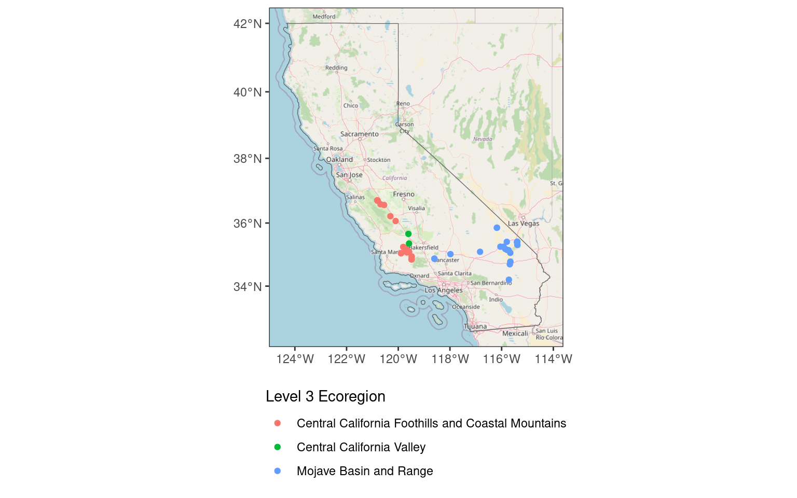
Compare the visual with and without the basemap. Aside from the basemap, can you notice any differences?
library(patchwork)
map_nobase + map_wbaseZoom: 6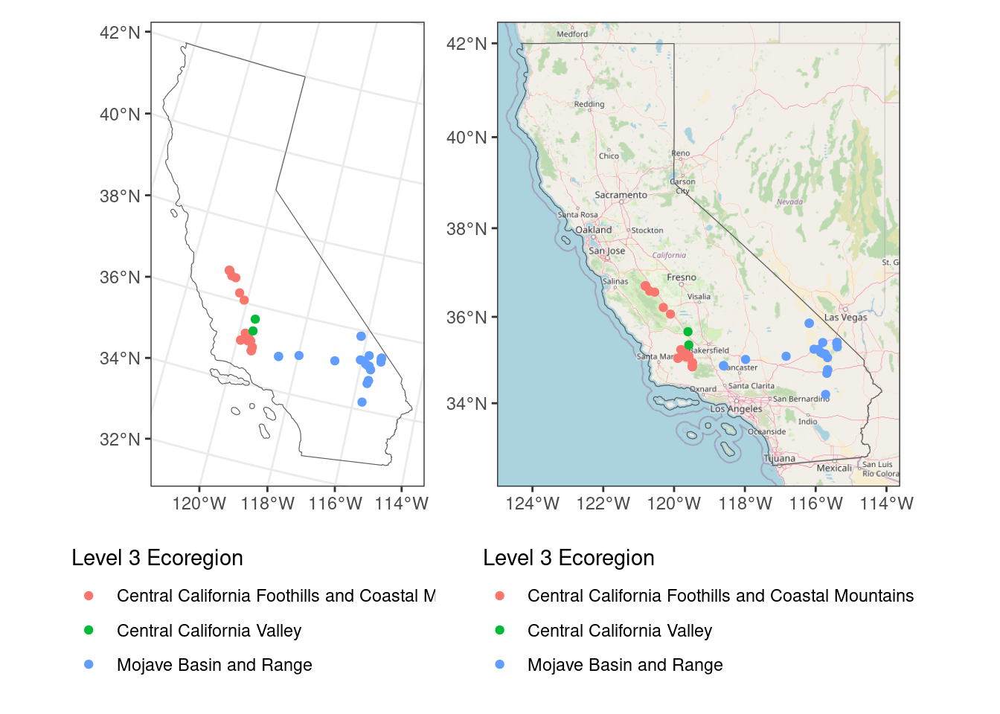
Yes, the projection is different! That is one of the annoying things about using ggspatial - it downloads the basemaps in a specific CRS - the Web Mercator projection (EPSG:3857). If it is the first layer added, then other layers are reprojected to Web Mercator, which is why the two maps look different.
If you want to have the map in the CRS of the data, specify a data argument in the call to ggplot().
ggplot(data = ca_proj_sf) + # specify data here to set CRS
ggspatial::annotation_map_tile(type = "osm", zoom = 6) +
geom_sf(fill = NA) +
geom_sf(
data = site_ecoreg_sf,
aes(color = US_L3NAME)
) +
scale_color_discrete(name = "Level 3 Ecoregion") +
guides(fill = guide_legend(ncol = 1, title.position = "top")) +
theme_bw() +
theme(
legend.position = "bottom",
legend.direction = "vertical"
)Loading required namespace: rasterZoom: 6Fetching 3 missing tiles
|
| | 0%
|
|======================= | 33%
|
|=============================================== | 67%
|
|======================================================================| 100%...complete!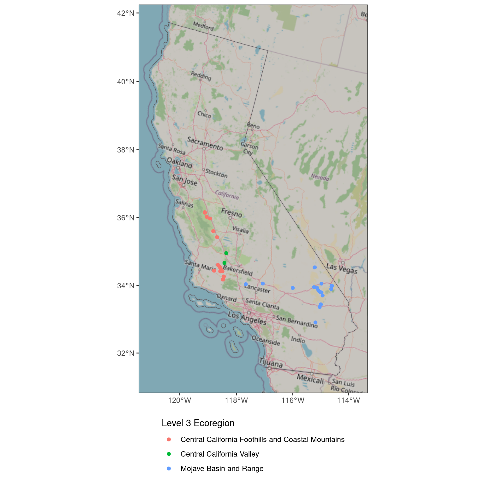
Now the map is back in the projection of the data, which is helpful if you don’t want to be stuck with only one option for the CRS of your map.
Caution
I am still figuring out how R does this under the hood. If the above code involves reprojecting the basemap tiles, what I suspect, as opposed to downloading the tiles in a different CRS I’d be careful as reprojecting involves resampling the raster into a new grid, which may slightly alter the appearance of the basemap.
5.3.2.2 Using maptiles
maptiles has different basemap options than ggspatial. See the help for get_tiles to see all of the options, some of which do require an API key. The default is OpenStreetMap.
ca3857 <- st_transform(ca_proj_sf, "epsg:3857")
ca_osm <- get_tiles(ca3857, crop = TRUE)
ca_osmclass : SpatRaster
dimensions : 273, 236, 3 (nrow, ncol, nlyr)
resolution : 4891.97, 4891.97 (x, y)
extent : -13858950, -12704446, 3830412, 5165920 (xmin, xmax, ymin, ymax)
coord. ref. : WGS 84 / Pseudo-Mercator (EPSG:3857)
source(s) : memory
colors RGB : 1, 2, 3
names : lyr.1, lyr.2, lyr.3
min values : 35, 35, 35
max values : 252, 252, 250 ggplot(data = ca3857) +
geom_spatraster_rgb(data = ca_osm, r = 1, g = 2, b = 3) +
geom_sf(fill = NA) +
geom_sf(
data = st_transform(site_ecoreg_sf, crs = "epsg:3857"),
aes(color = US_L3NAME)
#inherit.aes = FALSE # I've found I sometimes need to add this if I am having issues
) +
scale_color_discrete(name = "Level 3 Ecoregion") +
guides(fill = guide_legend(ncol = 1, title.position = "top")) +
theme_bw() +
theme(
legend.position = "bottom",
legend.direction = "vertical"
)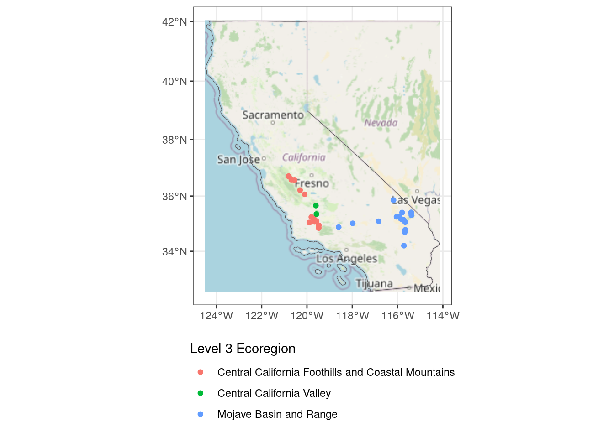
5.3.2.3 Additional basemap options
In addition to the built-in tile servers, you can also source a basemap from using a URL for an xyz raster source with ggspatial. Make sure you include attributions for the basemap service you use. The OpenStreetMap wiki page has a list of Tile providers and the urls for you to use to access them. Some of these servers require you to register, but many have a free tier for low volume users.
For this to work with ggspatial, you just put the URL in the “type” argument. You also need to make sure that the URL you use has a “$” in front of the {z}, {y}, and {x} otherwise the call returns an error. Additionally, make sure that there is an extension on the URL (.png, .jpg, or .jpeg) - this is also required for the function call to run properly.
# the OpenTopo map tile provider
open_topo <- "https://a.tile.opentopomap.org/${z}/${x}/${y}.png"
ggplot(data = ca_proj_sf) + # specify data here to set CRS
ggspatial::annotation_map_tile(
type = open_topo,
zoom = 7
) +
geom_sf(fill = NA, linewidth = 2, color = "black") + # don't need to specify data here since we did in ggplot call
geom_sf(
data = site_ecoreg_sf,
aes(color = US_L3NAME)
) +
scale_color_discrete(name = "Level 3 Ecoregion") +
guides(fill = guide_legend(ncol = 1, title.position = "top")) +
theme_bw() +
theme(
legend.position = "bottom",
legend.direction = "vertical"
)Zoom: 7Fetching 35 missing tiles
|
| | 0%
|
|== | 3%
|
|==== | 6%
|
|====== | 9%
|
|======== | 11%
|
|========== | 14%
|
|============ | 17%
|
|============== | 20%
|
|================ | 23%
|
|================== | 26%
|
|==================== | 29%
|
|====================== | 31%
|
|======================== | 34%
|
|========================== | 37%
|
|============================ | 40%
|
|============================== | 43%
|
|================================ | 46%
|
|================================== | 49%
|
|==================================== | 51%
|
|====================================== | 54%
|
|======================================== | 57%
|
|========================================== | 60%
|
|============================================ | 63%
|
|============================================== | 66%
|
|================================================ | 69%
|
|================================================== | 71%
|
|==================================================== | 74%
|
|====================================================== | 77%
|
|======================================================== | 80%
|
|========================================================== | 83%
|
|============================================================ | 86%
|
|============================================================== | 89%
|
|================================================================ | 91%
|
|================================================================== | 94%
|
|==================================================================== | 97%
|
|======================================================================| 100%...complete!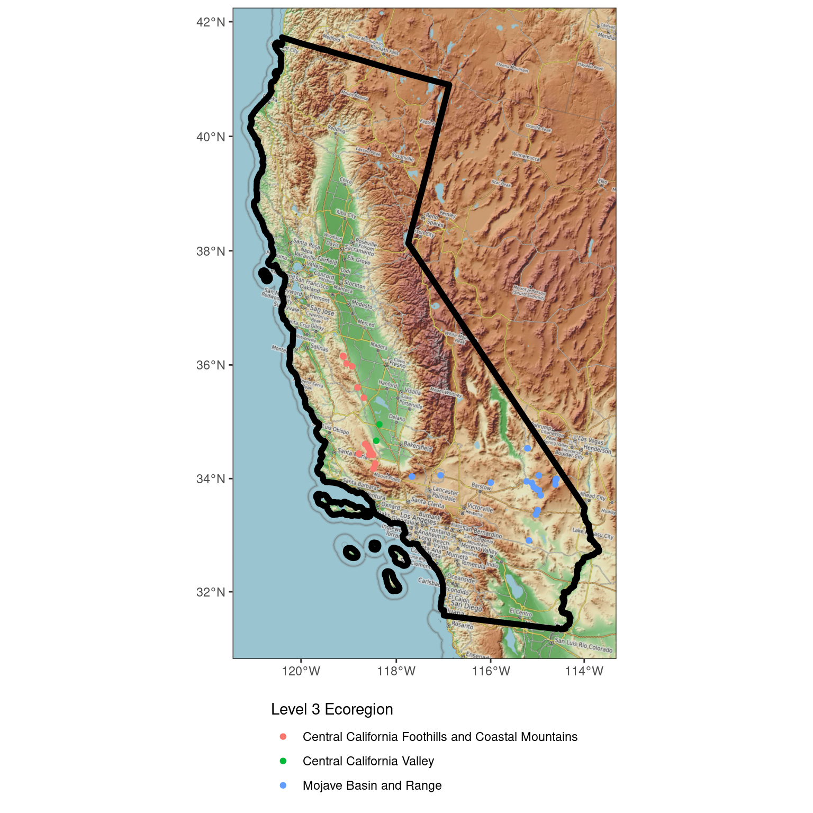
You can also do this with the maptiles package using the create_provider function:
# code not run, shown as example:
opentopomap <- create_provider(
name = "otm",
url = "https://{s}.tile.opentopomap.org/{z}/{x}/{y}.png",
sub = c("a", "b", "c"),
citation = "map data: © OpenStreetMap contributors, SRTM | map style: © OpenTopoMap (CC-BY-SA)"
)Places to Retrieve Basemaps
maptiler: XYZ rasters, free tier, requires API
xyzservices: list of xyz sources, some free some require subscriptions
https://www.xyht.com/spatial-itgis/using-openstreetmap-basemaps-qgis-3-0/
https://github.com/roblabs/xyz-raster-sources
5.3.2.4 Basemap from File
You can also add a basemap from a file in a similar way to the maptiles code, if your basemap layer is a GeoTiff file (.tif). Simply read in your data layer with terra and add it to your plot with tidyterra::geom_spatraster_rgb() or tidyterra::geom_spatraster() if it is a single layer.
Example:
# This code not run, shown as a demo
# load aerial imagery from National Agricultural Imagery Program
naip_tif <- rast("data/naip_imagery.tif")
samp_pts_sf <- st_read("data/shapefiles/sample_points.shp")
ggplot(data = samp_pts_sf) +
geom_spatraster_rgb(data = naip_tif) +
geom_sf()5.3.3 Add a scalebar and north arrow
It is usually helpful to have a scalebar and north arrow for reference and orientation. There are built-in functions in ggspatial to make this easy:
ca_osm <- get_tiles(ca_proj_sf, crop = TRUE, zoom = 6, provider = "Esri.WorldImagery")
ggplot(data = ca_proj_sf) + # specify data here to set CRS
geom_spatraster_rgb(data = ca_osm) +
geom_sf(fill = "transparent", color = "black", linewidth = 1) + # don't need to specify data here since we did in ggplot call
geom_sf(
data = site_ecoreg_sf,
aes(color = US_L3NAME)
#inherit.aes = FALSE # I've found I sometimes need to add this if I am having issues
) +
scale_color_discrete(name = "Level 3 Ecoregion") +
guides(fill = guide_legend(ncol = 1, title.position = "top")) +
theme_void() +
ggspatial::annotation_scale() +
ggspatial::annotation_north_arrow()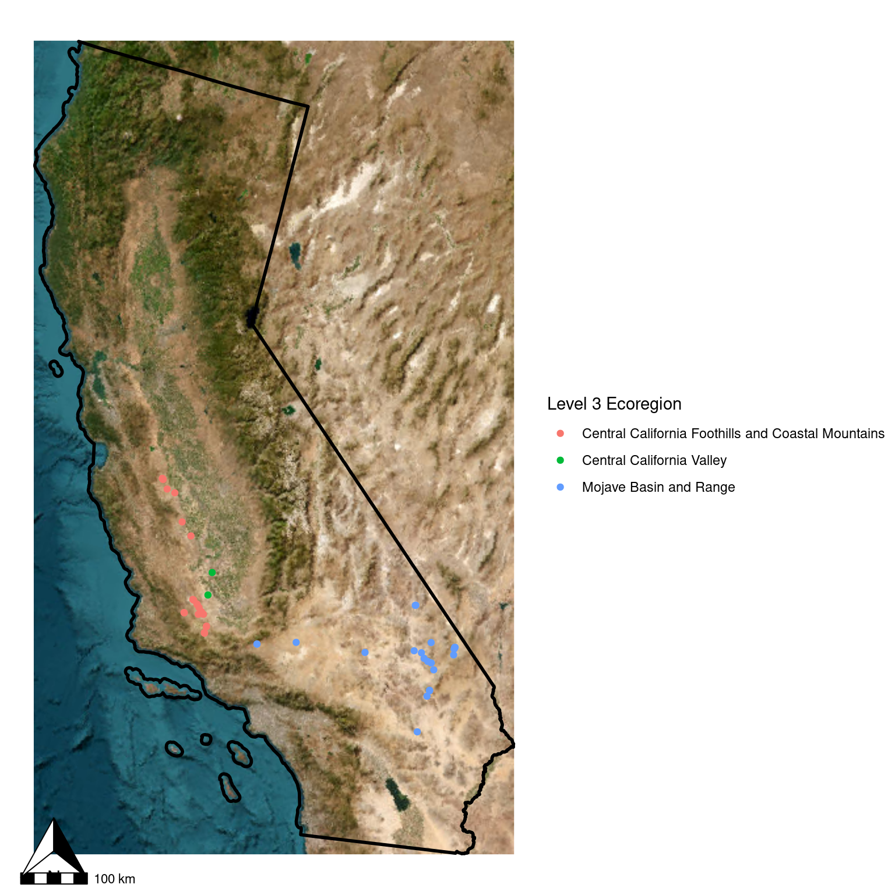
5.3.3.1 Manipulating scale and north arrow
You’ll notice that with the basic options, the scale bar and north arrow overlap, and the scale or arrow may not display at an appropriate size with the default options. Some helpful arguments for manipulating the appearance of the scale bar and north arrows are shown below.
Arguments for both annotation_scale and annotation_north_arrow
pad_yandpad_x: change the positioning of the arrows from the cornerheightandwidth: change the size of the arrow
Caution
You must use the unit([value], "unit") function to specify position and size options for the padding, height, and width options or the call will return an error message. For example:
annotation_scale(pad_x = unit(0.5, "cm"))style:for north arrow, specify style with a call to one of the built-in arrow functions, e.g.
north_arrow_fancy_orienteering. This also allows you to change line and text color of the arrow.for scale bar, one of “bar” or “ticks”
location: general location to put the scalebar or north arrow, e.g. “tl” for “top left”
North arrow only
which_north: “grid” - north arrow points up; “true” - north arrow points to north pole (may need to modify depending on projection)
Scale bar only
width_hint: roundabout way of controlling how wide the scale_bar is, which is the only way to change the number of breaks displayedunit_category: “metric” or “imperial” units
ggplot(data = ca_proj_sf) + # specify data here to set CRS
geom_spatraster_rgb(data = ca_osm) +
geom_sf(fill = "transparent", color = "black", linewidth = 1) +
geom_sf(
data = site_ecoreg_sf,
aes(color = US_L3NAME)
) +
scale_color_discrete(name = "Level 3 Ecoregion") +
guides(fill = guide_legend(ncol = 1, title.position = "top")) +
theme_void() +
theme(
legend.position = "bottom",
legend.direction = "vertical"
) +
ggspatial::annotation_scale(
pad_y = unit(0.5, "cm"),
width_hint = 0.3,
unit_category = "imperial"
) +
ggspatial::annotation_north_arrow(
pad_y = unit(1, "cm"),
pad_x = unit(.75, "cm"),
height = unit(1, "cm"),
width = unit(1, "cm"),
which_north = "true",
style = ggspatial::north_arrow_fancy_orienteering(
line_col = "white",
text_col = "white",
fill = c("white", "black")
))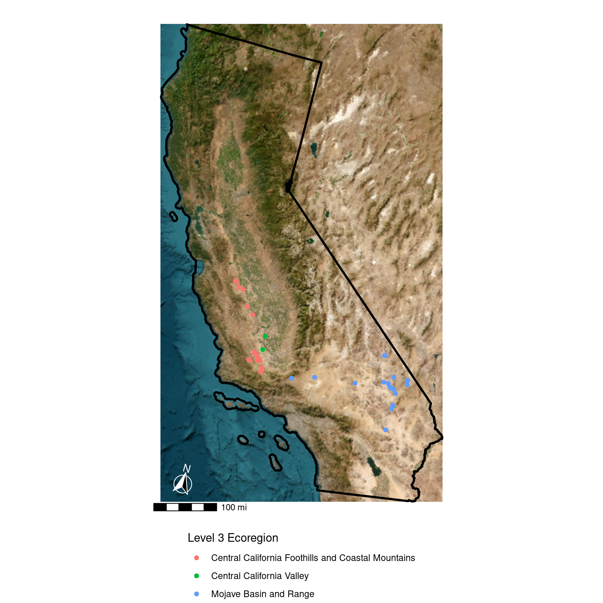
Exercises
- Use the
tigrispackage and eitherggspatialormaptilespackage to download a basemap for a different state and then visualize it withggplot. Play around with the aesthetics to make it fun!
# Template code- Too easy? Try downloading either another data type from the
tigrispackage (e.g., roads or county lines) or another data repository of your choice and plotting that on top of your basemap.
5.4 Part III: Tips and Tricks
5.4.1 Making an inset map
As mentioned above, there may be times when you want to focus on a small region but provide context for the larger region. An inset map can help with this, and one way to do this in R is to create two separate maps and then combine them. I use the cowplot package to layer them.
Here I am modifying the California ecoregion shapefile to highlight the central drylands of California.
# select central california dryland ecoregions
ecoreg_sjv <- c("6ac", "6an", "6ak", "6ao", "6am", "6ad")
ecoreg_pan <- c("6aa", "6ab", "7v", "7u", "6al")
ecoreg_CV <- c("7o", "7m", "7r", "7t", "7s","7q", "7d", "7p", "7n")
# create dataframe for grouping
all_groups <- data.frame(
group = c(
rep("SJV", length(ecoreg_sjv)),
rep("PAN", length(ecoreg_pan)),
rep("CV", length(ecoreg_CV))
),
l4_code = c(ecoreg_sjv, ecoreg_pan, ecoreg_CV)
)
# filter ecoregion shapefile to just the l4 codes specified fro the central drylands
all_eco <- ecoreg_sf %>%
inner_join(all_groups, by = c("US_L4CODE" = "l4_code"))
# remove the inner boundaries of the L4 with st_union to create a shapefile with
# only L3 boundaries
all_eco <- all_eco %>%
group_by(group) %>%
summarize(geometry = st_union(geometry))
# transform to proper CRS for plotting
dryland_eco_3857 <- st_transform(all_eco, crs = "epsg:3857")This code creates two separate maps, then combines them with cowplot. ::: {.cell}
library(cowplot) # for combining maps
# transform outline to get tiles
ca3857 <- st_transform(ca_proj_sf, "epsg:3857")
ca_osm <- get_tiles(
st_buffer(dryland_eco_3857, 50000),
crop = TRUE,
zoom = 7,
provider = "Esri.WorldImagery"
)
# create plot boundary with a buffer
# this creates a buffer of 50 km (50000 m, the CRS units)
plot_bbox <- sf::st_bbox(st_buffer(dryland_eco_3857, 50000))
# join the boundaries to remove the L3 ecoregion layers
dryland_eco_join_3857 <- st_union(dryland_eco_3857)
# make inset map
inset_map <- ggplot() +
geom_sf(data = dryland_eco_3857, fill = "grey80", color = "black", linewidth = 0.5) +
geom_sf(data = ca3857, fill = NA, color = "black", linewidth = 0.4) +
theme_bw() +
theme(axis.text = element_blank(),
panel.grid = element_blank(),
axis.ticks = element_blank(),
panel.background = element_blank(),
panel.border = element_blank(),
plot.background = element_rect(colour = "black", fill = "white"))
# make main map
main_map <- ggplot() +
tidyterra::geom_spatraster_rgb(data = ca_osm) +
geom_sf(data = dryland_eco_join_3857, fill = NA, color = "black", linewidth = 0.7) +
geom_sf(data = ca3857, fill = NA, color = "black", linewidth = 0.4) +
coord_sf(
xlim = plot_bbox[c(1,3)],
ylim = plot_bbox[c(2,4)],
expand = FALSE
) +
theme_void() +
ggspatial::annotation_scale(
text_col = "white",
line_col = "black",
pad_y = unit(0.5, "cm")) +
ggspatial::annotation_north_arrow(
pad_y = unit(1, "cm"),
style = ggspatial::north_arrow_fancy_orienteering(text_col = 'white', line_col = "white"))
# combine into one plot
ggdraw() +
draw_plot(main_map) +
draw_plot(inset_map,
height = 0.28,
x = 0.16,
y = 0.68)
:::
5.4.2 Creating a Theme and Setting Defaults
5.4.2.1 Create your own theme
Specifying the theme parameters each time takes up a lot of code, so I like to find base theme, modify it, and then save it as a new theme so I can add it to the map with one line of code. This also makes it easier to modify multiple plots since you will only have to change the code in one place to modify your theme as opposed to all of your code to make each map.
For mapping, I like to start with either theme_bw() if you want lat/long included or theme_void() if you don’t want any of the normal plot features.
There are a large number of different elements you can control with themes (see https://ggplot2-book.org/themes for an overview), but to manipulate the plot appearance you will usually follow this general template:
plot + theme(element.name = element_function(argument = "option"))Most theme elements are also hierarchical, so they inherit from the parent element. This means that if you want to change all of the font for your plot, you only need to change the text element. Or, you could just change the axis.text.
theme_bw_ag <- theme_bw(base_size = 14) +
theme(
text = element_text(family = "AvantGarde"),
panel.background = element_blank(), # use element_blank() to remove elements
plot.background = element_blank(),
panel.border = element_rect(colour = "grey92"),
axis.ticks = element_line(colour = "grey92"),
axis.text = element_text(colour = "grey40"),
axis.text.x = element_text(angle = 35, hjust = 1, vjust = 1)
)You can also specify default color and fill options by creating a layer with the theme and scale_*_manual options as shown below
# fill colors
ecoreg_fill <- c(
"#fed725",
"#cde11d",
"#98d83e",
"#67cc5c",
"#40bd72",
"#25ac82",
"#1f998e",
"#24878e",
"#2b748e",
"#34618d",
"#3d4d8a",
"#453581",
"#481c6e",
"#440154"
)
ecoreg_theme <- list(
theme_bw(base_size = 14),
scale_fill_manual(values = ecoreg_fill, name = "US L3 Ecoregion"),
theme(
text = element_text(family = "Times"),
panel.background = element_blank(), # use element_blank() to remove elements
plot.background = element_blank(),
panel.border = element_rect(colour = "grey92"),
axis.ticks = element_line(colour = "grey92"),
axis.text = element_text(colour = "grey40"),
axis.text.x = element_text(angle = 35, hjust = 1, vjust = 1)
)
)
Tip
For better font support and options see the extrafont package
ggplot() + # don't specify data here since we have multiple data sets to plot
geom_sf(data = ca_proj_sf, fill = NA) + # must specify "data = " or it will throw an error
geom_sf(data = ecoreg_sf, aes(fill = US_L3NAME), color = NA) + # like other data you can set fill
geom_sf(data = site_ca_proj_sf) +
guides(fill = guide_legend(ncol = 1, title.position = "top")) +
ecoreg_theme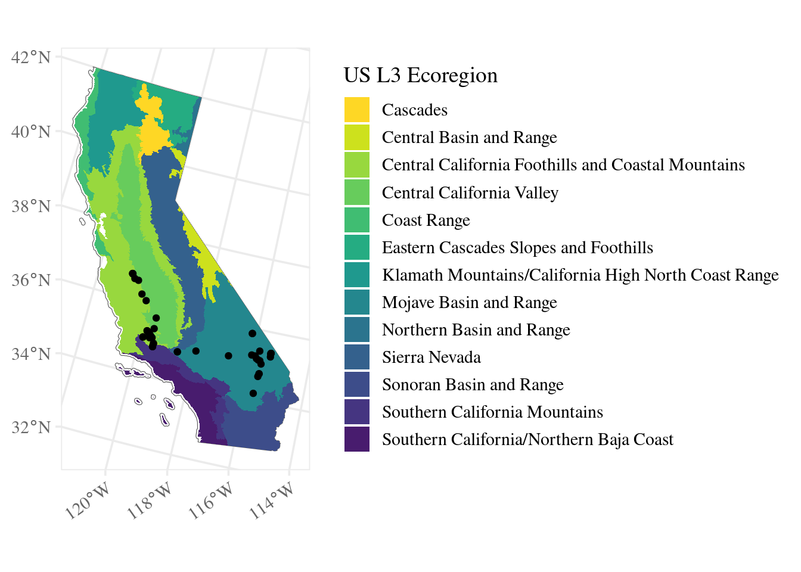
5.4.2.2 Set Geometry Defaults
You are also able to set some defaults for parameters that you can’t easily modify with ggplot themes. For example, specifying shapes and sizes for points or linewidth and colors for polygons.
# set defaults for point geometry
update_geom_defaults("point", list(shape = 21, color = "black", fill = "grey20", size = 2))ggplot() + # don't specify data here since we have multiple data sets to plot
geom_sf(data = ecoreg_sf, aes(fill = stringr::str_wrap(US_L3NAME, 35)), color = NA) +
geom_sf(data = site_ca_proj_sf, alpha = 0.5) +
geom_sf(data = ca_proj_sf, fill = NA, linewidth = 1, color = "grey40") +
guides(fill = guide_legend(ncol = 1, title.position = "top")) +
ecoreg_theme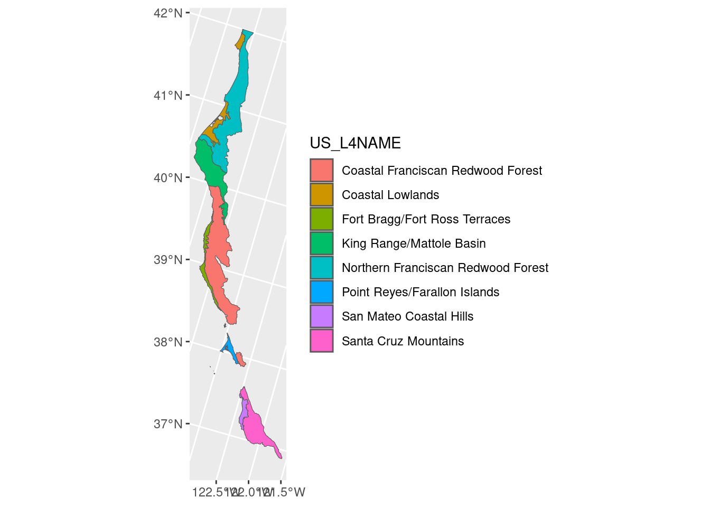
5.4.3 Functional Programming
What if you want to make a lot of maps? Copying and pasting code is annoying and also leads to issues with reproducibility. If you are going to be making multiple maps that are very similar you can turn your call to ggplot into a function so that all you need to do is provide the data or other parameters you want to manipulate and save yourself many lines of code. This will also allow you to more easily modify multiple plots by only having to change your code in one place.
As an example, let’s play around with the California ecoregions some more.
Goal: Create a function to plot each ecoregion with a basemap
Steps:
Create a template map
Identify the components that will vary for each ecoregion - these become the arguments
Replace the varying components with a variable
Put into function
Create a list of arguments to run the function over
Pass the list to the function using
purrr::map
ca_l3_ecoreg <- unique(ecoreg_sf$US_L3NAME)
ecoreg_sf_tmp <- filter(ecoreg_sf, US_L3NAME == ca_l3_ecoreg[1])
ggplot(ecoreg_sf_tmp) +
geom_sf(aes(fill = US_L4NAME))
# now get a basemap
tmp_basemap <- get_tiles(ecoreg_sf_tmp, zoom = 7, provider = "Esri.WorldImagery")
# add to plot
ggplot(ecoreg_sf_tmp) +
geom_spatraster_rgb(data = tmp_basemap) +
geom_sf(aes(fill = US_L4NAME), alpha = 0.5, color = "black")<SpatRaster> resampled to 501239 cells for plotting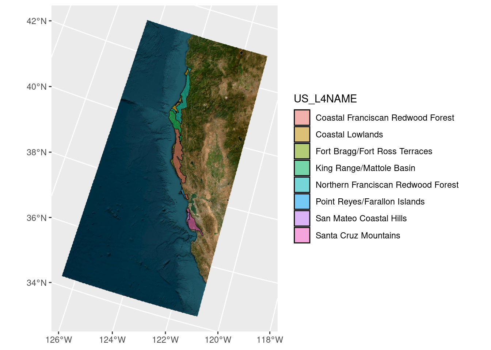
Now we need to turn this into a generic function
plot_ecoreg <- function(ecoreg_name){
ecoreg_sf_tmp <- filter(ecoreg_sf, US_L3NAME == ecoreg_name)
tmp_basemap <- get_tiles(ecoreg_sf_tmp, zoom = 7, provider = "Esri.WorldImagery")
ggplot(ecoreg_sf_tmp) +
geom_spatraster_rgb(data = tmp_basemap) +
geom_sf(aes(fill = US_L4NAME), alpha = 0.5, color = "black")
}Let’s test it out with our list
plot_ecoreg(ca_l3_ecoreg[1])
# use the purrr package to apply (map) our function to each item of a list or vector
purrr::map(ca_l3_ecoreg[1:5], plot_ecoreg)I’d like to add a title for each figure so we know which ecoregion it represents.
plot_ecoreg <- function(ecoreg_name){
ecoreg_sf_tmp <- filter(ecoreg_sf, US_L3NAME == ecoreg_name)
tmp_basemap <- get_tiles(ecoreg_sf_tmp, zoom = 7, provider = "Esri.WorldImagery")
title <- ecoreg_sf_tmp$US_L3NAME
ggplot(ecoreg_sf_tmp) +
geom_spatraster_rgb(data = tmp_basemap) +
geom_sf(aes(fill = US_L4NAME), alpha = 0.5, color = "black") +
ggtitle(title) +
theme_void() +
theme(legend.position = "none")
}Now let’s try it again:
purrr::map(ca_l3_ecoreg[1:2], plot_ecoreg)<SpatRaster> resampled to 501239 cells for plotting[[1]]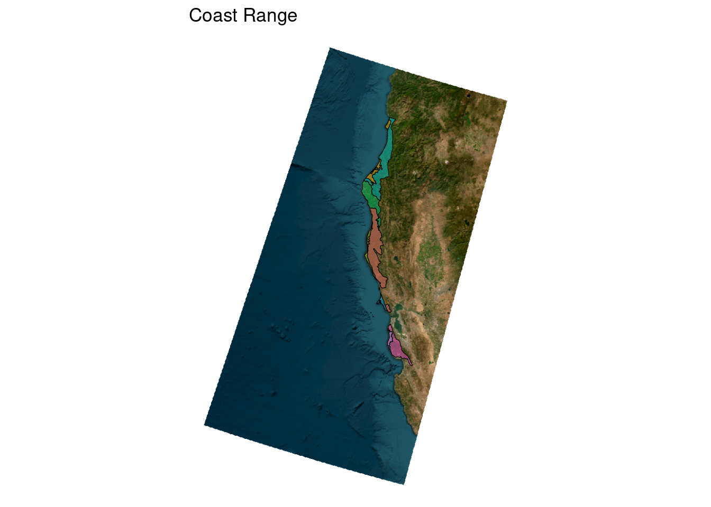
[[2]]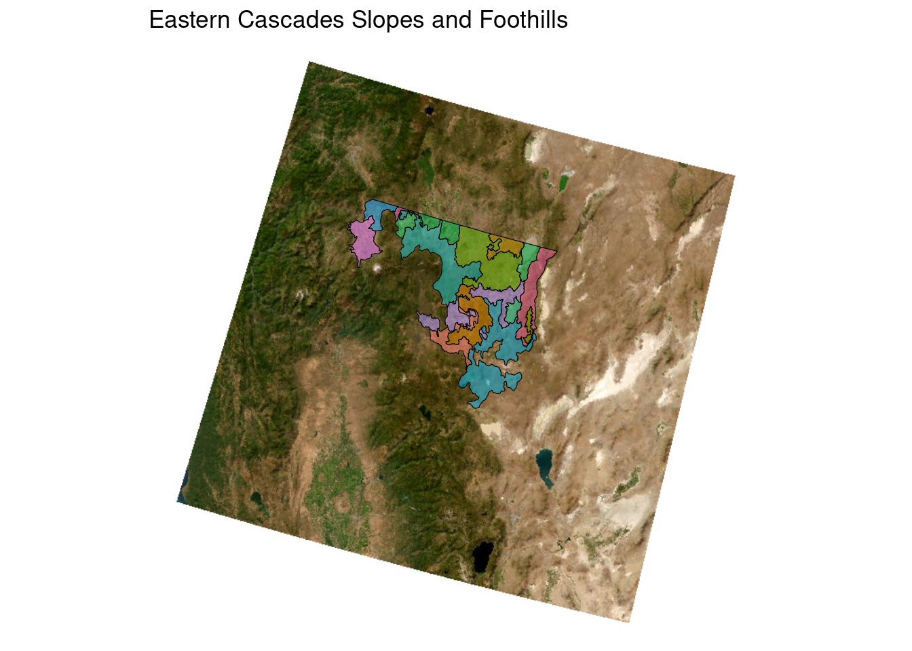
This is pretty quick and dirty illustration of how to turn a simple map into a function for faster and reproducible programming - but it’s one of the big perks of mapping in R. With just a couple lines of code we could make a map for all of the ecoregions of California - which would have taken way more code if we had to make each map individually.
5.5 Additional Resources
Other Data Providers
other packages
5.6 References
- Geocomputation with R: Free ebook with lots of great information and code demos about working with spatial data in R
sfCheatsheetOpenStreetMapexample